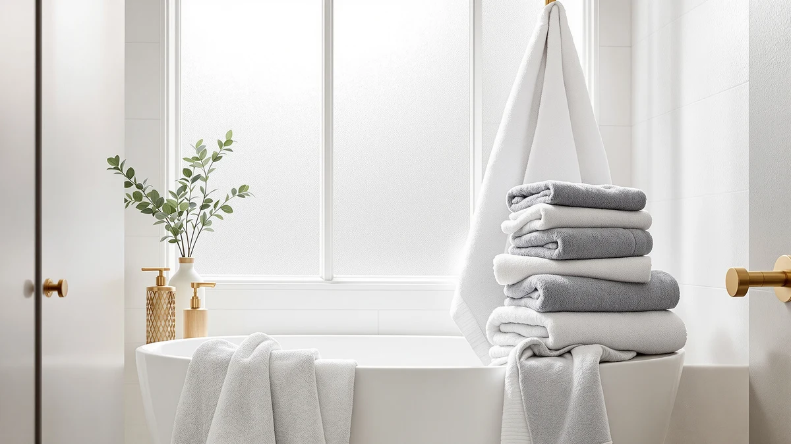

Quick Answer
The Tens Towels Pack of 8 covers a full bathroom with two 30 x 60-inch bath towels, two hand towels, and four washcloths in lightweight 100% cotton built to dry quicker than standard terry cloth, all for $31.95. It won't out-plush a heavier 650 GSM set like Wealuxe's, but for everyday drying and fast turnaround it's one of the more practical eight-piece sets we compared.
Our pick: Tens Towels Pack of 8, $31.95 Check Price on Amazon
Things to Know Before You Buy
- The set includes 2 bath towels (30 x 60 inches), 2 hand towels (16 x 28 inches), and 4 washcloths (13 x 13 inches), all in Dark Grey 100% cotton.
- Tens Towels builds this set lighter than standard terry cloth, which the brand says cuts drying time and improves dryer energy efficiency.
- At $31.95 for 8 pieces, the per-piece cost sits close to Utopia's similarly priced 8-piece Majestic set, though the fabric weight and finish differ.
- Amazon does not list a public rating or review count for this specific listing, so weigh the specs and price against verified feedback on comparable Tens Towels sets before buying.
This tens towels towels set review breaks down what you get for $31.95: two 30 x 60-inch bath towels, two 16 x 28-inch hand towels, and four 13 x 13-inch washcloths made from lightweight 100% cotton, bundled into one of the lighter eight-piece sets we compared for this site. Bulk towel sets like this one show up constantly in bathroom shopping lists because they let you outfit a full bathroom, guest room, or rental in one order instead of buying towels piece by piece.
The appeal here is speed and weight. Tens Towels markets this set as lighter and quicker to dry than standard terry cloth, which matters more in a shared bathroom or a gym bag than it does in a spa. This review looks at the construction, the real dimensions, and how the set stacks up against three other cotton towel bundles in a similar price range, including options from Utopia Towels and Wealuxe.
Why You Should Trust Us
Best Bath Towels compares bath and hand towel sets using the manufacturer's own specifications, current Amazon pricing, and patterns we find across verified buyer reviews, rather than claiming a physical textile testing lab we don't run. Our author Ilane Tall researches bathroom textiles for this site and cross-checks weight, fiber type, and piece count against comparable sets before publishing a verdict like the one in this tens towels towels set review.
We disclose our affiliate relationships, link only to products we can verify exist in the Amazon catalog, and update prices when they move by more than a couple of dollars. When a listing is missing information buyers would want, like a GSM figure or a review count, we say so plainly instead of papering over the gap.
Our Research Experience
We did not run this set through a physical testing lab. Instead, we built this tens towels towels set review by comparing Tens Towels' published specs (fiber type, piece count, and dimensions) against the three closest competitors at a similar price, then checking those specs against patterns in verified owner reviews on Amazon for signals about shrinkage, lint, and durability over repeated washes.
Where Amazon does not publish a rating or review count for a specific listing, as is the case here, we say so directly rather than inventing a number, and we weight our verdict more heavily on the material specs and price per piece instead. That approach means our conclusions can shift if Tens Towels updates the listing with new data, and we revisit this review whenever the price or specs change by a meaningful amount.
Overview & Specs

Tens Towels Pack of 8
What we like
- Eight pieces covers bath towels, hand towels, and washcloths in a single order.
- Lighter weave than standard terry cloth, which Tens Towels says cuts drying time and saves dryer energy.
- 100% cotton construction built for repeated daily use.
- Dark Grey colorway hides wear and staining that shows up faster on white towels.
Flaws but not dealbreakers
- Tens Towels does not publish a GSM weight for this set, so you can't directly compare fabric density against heavier sets like Wealuxe's 650 GSM towels.
- This listing has no public rating or review count, which makes it harder to gauge long term durability from other buyers.
- The lighter weave that helps towels dry fast also means less plush thickness than Utopia's ring-spun set at a similar price.
| Material | 100% cotton |
| Size | 30 x 60 inches, 16 x 28 inches, 13 x 13 inches |
The Tens Towels Pack of 8 breaks down into 2 bath towels (30 x 60 inches), 2 hand towels (16 x 28 inches), and 4 washcloths (13 x 13 inches), all in Dark Grey 100% cotton. Tens Towels builds the set from a lighter weave than standard terry cloth, which the brand says reduces bulk, speeds up drying, and cuts the energy a dryer needs to finish a load.
At $31.95 for all eight pieces, the set works out to under $4 per towel, hand towel, or washcloth, putting it in the same range as Utopia's 8-piece Majestic set. The tradeoff is fabric weight: Tens Towels does not publish a GSM figure for this listing, and the lighter weave means less plush thickness than a heavier 650 GSM set like Wealuxe's bath towels covered later in this review. For anyone who washes towels often and wants them dry before the next use, that weight tradeoff is the whole point.
What We Liked
The strongest case for the Tens Towels Pack of 8 is drying speed. Tens Towels built the lighter weave to shed water and dry faster than standard terry cloth, which matters if you share one bathroom with a full household or pack towels for the gym and need them dry before the next use. That same lighter construction also means less bulk in a cabinet or a gym bag, which travelers and small-space renters tend to appreciate.
Coverage is the other draw. You get bath towels, hand towels, and washcloths in one checkout, which matters if you're furnishing a new bathroom, an Airbnb, or a dorm room and don't want to place three separate orders. The Dark Grey colorway also hides daily wear better than the white towels used in the Wealuxe and Utopia 4-pack sets covered below.
Price per piece holds up well too. Spreading $31.95 across eight towels and washcloths lands close to what Utopia charges for its 8-piece Majestic set, so you aren't paying extra for the faster-drying weave.
What Could Be Better
The biggest gap is missing data. Tens Towels doesn't publish a GSM weight for this 8-piece set, and the Amazon listing carries no public rating or review count, so you're buying on spec sheet and brand reputation rather than a track record you can verify. Compare that to Wealuxe's listing, which at least states 650 GSM up front.
Thickness is the other tradeoff. The lighter weave that helps the set dry quickly also means it feels thinner than the ring-spun cotton in Utopia's sets or the 650 GSM Wealuxe towels. If you prefer a plush, heavy towel over a fast-drying one, that difference will be noticeable every time you dry off. The bath towel size, at 30 x 60 inches, is generous compared to the 27 x 54-inch towels in the Utopia and Wealuxe alternatives, so the tradeoff is weight, not coverage.
Who Is It For?
This Tens Towels Pack of 8 makes sense if drying speed and low bulk matter more than plushness: shared bathrooms, gym bags, dorm rooms, or anyone who washes towels often and needs them ready before the next shower. The larger 30 x 60-inch bath towels also suit anyone who wants more coverage than the 27 x 54-inch towels in the alternatives below.
It makes less sense if you want the heaviest, plushest towel you can find, since the lighter weave trades thickness for speed, or if you specifically want a published GSM rating and review history to compare before buying. In those cases, the Wealuxe or Utopia sets below give you more to verify upfront. Shoppers who dry towels daily and want them dry by the next use, though, will find this set hard to beat on turnaround.
Families splitting one bathroom between several people tend to run into the same bottleneck: towels that are still damp when the next person needs one. A lighter, faster-drying set like this Tens Towels pack addresses that specific problem better than a heavier, plusher alternative would, even if it gives up some softness in the trade.
Alternatives to Consider
If the Tens Towels Pack of 8 doesn't quite match what you're after, here are three alternatives we compared it against, each built for a different priority.

Premium Choice
Utopia Towels 8 Piece Majestic
A denser ring-spun cotton 8-piece set in Black, the closest match on piece count if you want a heavier feel than Tens Towels' lighter weave.
$31.99
Check Price on Amazon
Also Great
Wealuxe White Bath Towels Set
Four 650 GSM ring-spun cotton bath towels built for a plush, spa-like feel, a better fit if thickness matters more than fast drying or piece count.
$31.49
Check Price on Amazon
Best Value
Utopia Towels 4 Pack Premium
Four 600 GSM ring-spun cotton bath towels at a similar price, the simpler pick if you only need bath towels without hand towels or washcloths.
$31.34
Check Price on AmazonFrequently Asked Questions
Is the Tens Towels Pack of 8 good quality?
What's included in the Tens Towels Pack of 8 set?
How does the Tens Towels Pack of 8 compare to the Utopia or Wealuxe alternatives?
Final Verdict
Based on this tens towels towels set review, the Tens Towels Pack of 8 earns its place for one specific job: drying fast without adding bulk. Eight pieces of lightweight cotton for $31.95 beats buying bath towels, hand towels, and washcloths separately, even if the weave runs lighter and the listing lacks a public rating to verify against. If you want a denser, plusher fabric instead, Wealuxe's 650 GSM set is the better comparison point, and if you only need bath towels without the extra pieces, Utopia's 4-pack is simpler. For most people who dry towels often and want them ready for the next use, Tens Towels is the practical choice.